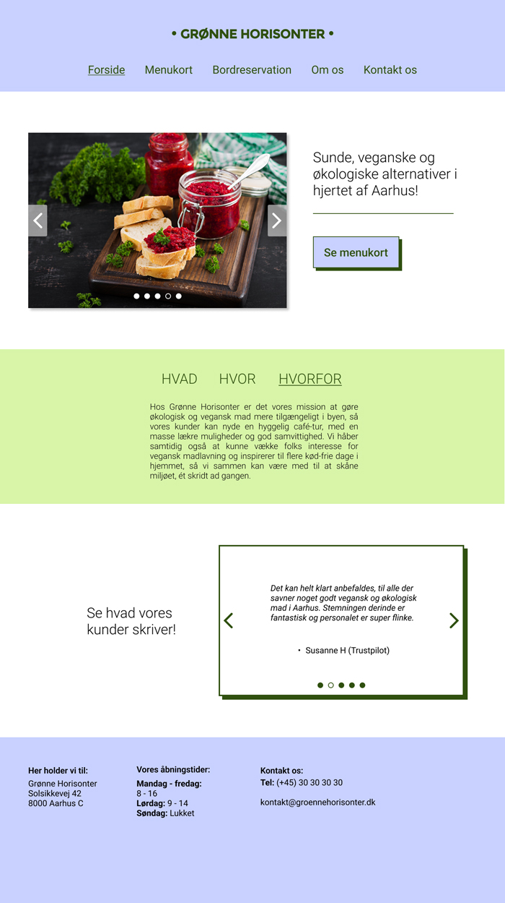

Aleksandra Christensen
Jeg hedder Aleksandra, jeg er 21 år gammel og er lige nu i gang med 2. semester på multimediedesigner i Odense.
LIDT OM MIG
Jeg hedder Aleksandra, jeg er 21 år gammel og er lige nu i gang med 2. semester på multimediedesigner i Odense. Jeg har altid haft stor interesse for grafisk og visuelt design og uddannelsen giver mig mulighed for at udnytte mine evner, men også udvikle dem samt lære nye evner og færdigheder.
MINE EVNER
Photoshop
InDesign
PremierePro
Illustrator
AfterEffects
Figma
HTML
CSS
JavaScript
PORTFOLIO
Pentia Mobile logo-animation
Denne animation har jeg lavet i forbindelse med mit eksamensprojekt på 2. semester, hvor min gruppe og jeg samarbejdede med Pentia Mobile i Odense. Jeg brugte AfterEffects til at lave animationen, hvorefter den blev brugt som intro, til en employer-branding video.
Design af hjemmeside til Grønne Horisonter
Denne mock-up har jeg lavet i forbindelse med en skoleopgave på 2. semester, hvor jeg skulle designe en hjemmeside til en fiktiv vegansk og økologisk café i Aarhus. Selve designet af hjemmesiden er lavet i Figma og til mock-uppen har jeg brugt Photoshop, samt et billede taget fra freepik.com.
Instagram-opslag til Ungdommens Røde Kors
Disse billeder har jeg lavet til et instagram-opslag, tiltænkt URK's instagram profil. De blev lavet i forbindelse med et skoleprojekt på 2. semester. Her har jeg brugt en blanding af Photoshop og Illustrator.
CSS- og Illustrator animation
Denne animation lavede jeg på 1. semester til en skoleopgave, hvor vi lærte at lave et såkaldt spritesheet i Illustrator, som skulle eksporteres som en png-fil, hvorefter vi ved hjælp af HTML og CSS, kunne animere spritesheetet.
Logo og visitkort til Jyderup Haveservice
Her har jeg gjort brug af Illustrator, for at designe dette logo til Jyderup Haverservice. Mock-uppen af visitkortene er lavet i Photoshop, med et billede taget fra freepik.com.

KONTAKT MIG
kontakt mig på mail
christensen.alek@gmail.com
Kontakt mig på telefon
+45 25 73 30 52
Find mig på sociale medier